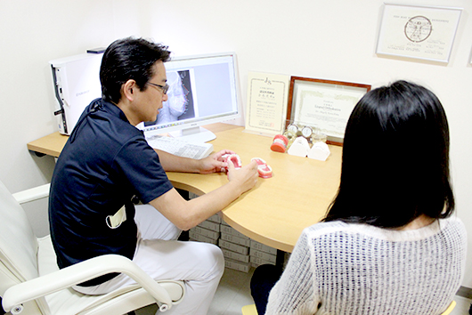
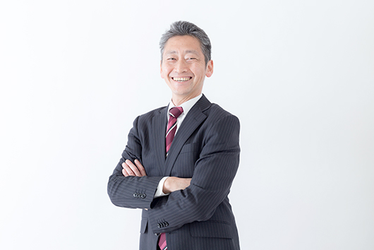
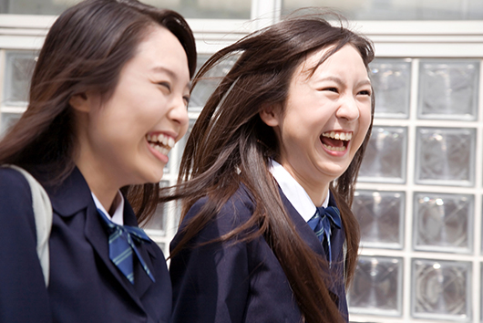
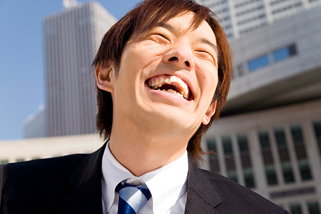
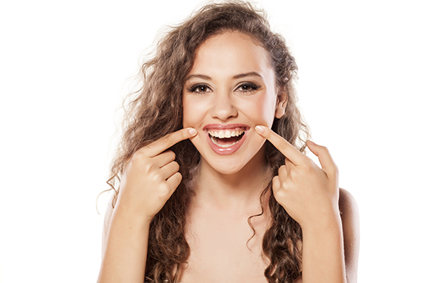
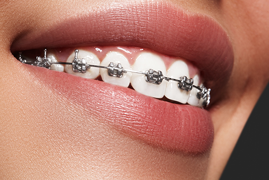
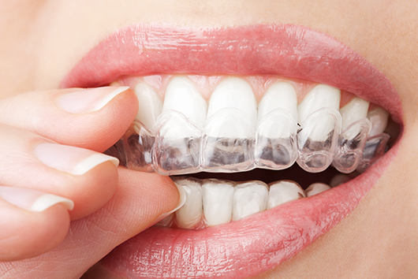
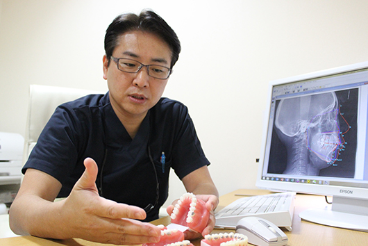
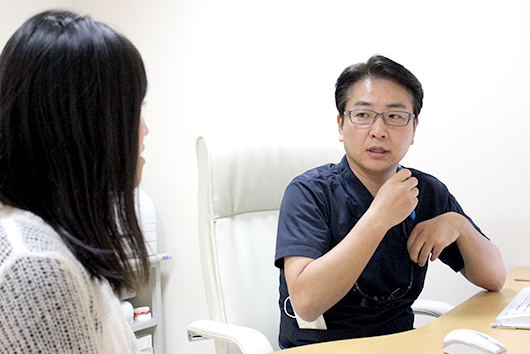

- ホーム
- 目立たない裏側（舌側）矯正とは
目立たない裏側（舌側）矯正にこだわる理由

矯正装置の見た目が気になる方へ
川崎市・たまプラーザの「くらしま矯正歯科」で行っている裏側矯正は、歯の裏側に装置をつけて歯並びを整える歯科矯正の方法です。一般的な矯正治療のようにワイヤーやブラケットが目立ちにくいので、矯正中でも口元を気にせずに過ごせます。審美性に優れた矯正治療であるため、人前に出る職業の方や矯正していることを知られたくない方でも安心して治療をお受けいただけます。
従来の表側矯正と比べると高度な技術を要するため、裏側矯正は限られた歯科医院でしか受けられません。「くらしま矯正歯科」は、全国に60人しか存在していない日本舌側矯正歯科学会認定医が在籍する、裏側矯正の高い技術を持つ医院です。現在、当院で治療されている大人の患者さまの約半数が、裏側矯正を選ばれています。

こんな方におすすめです
40代以降の矯正治療
「大人になってから矯正を始めるとどう思われるかな」「いまさら遅すぎるかな」と治療をためらってしまう40代以降の方に、裏側矯正はおすすめです。しっかりとワイヤーの力で歯を動かしつつ、周囲の人には矯正していることがわかりづらいので、大人の方でも人の目を気にせず治療を進められます。営業職のビジネスパーソンや、店舗などでの接客における印象アップに最適です。

高校生の矯正歯科
外見への意識が高まり始める高校生は、見た目を気にして従来の表側矯正を行うことに抵抗感を抱く方も珍しくありません。裏側矯正であれば矯正装置が見えないので、おしゃれと矯正を両立できます。ファッションや写真うつりにも影響が出にくく、貴重な高校生時代の思い出づくりをジャマしません。

成人男性の矯正歯科
成人男性で歯列矯正をする方は女性に比べて少ないため、矯正治療を周囲に知られることに不安があるかもしれません。歯並びの悪さはもちろん、矯正中に見えてしまう装置の存在は、ビジネスにおける印象を大きく左右するものです。成人男性が仕事に影響を与えることなく矯正したいのであれば、装置が目立たない裏側矯正が最適です。

目立たない裏側（舌側）矯正について
裏側矯正（舌側矯正）とは、目立ちにくいブラケット装置を歯の裏側（舌側）に装着して、歯並びを改善していく歯列矯正治療です。歯並びへの関心が高い欧米諸国では矯正装置が見えてもポジティブな印象ですが、日本では矯正装置の見た目をネガティブに捉える方が大半です。そのため裏側矯正は、周囲に気づかれずに矯正治療をしたいと考える方にご好評いただいています。
近年は装置の開発が進み技術も進化してきたので、表側矯正と同様の矯正効果を実現しつつ、舌のジャマになったり違和感を覚えたりしない治療が可能です。歯の裏側につけても発音を遮りにくい装置を使うため、歌手やアナウンサーにも選ばれています。
裏側矯正（舌側矯正）とは
裏側矯正（舌側矯正）
裏側矯正は、名前の通り歯の裏側に装置をつけて歯並びを整えていく、目立ちにくい矯正です。表側矯正よりも半年程度多く時間がかかりますが、見えにくいためストレスを感じにくく、治療期間中は快適にお過ごしいただけます。
舌側に装置がつくため治療初期は違和感を覚えますが、2～3週間程度で慣れる人が多く、アナウンサーや声優の方でも仕事と両立しながら治療を続けられます。ニーズが高い一方で高い技術力が必要なため、治療できる歯科医師が限られています。
表側矯正

表側矯正は、唇側に矯正装置をつける一般的な矯正方法です。歯のでこぼこをしっかりと治したいときに最適で、ほかの方法よりも若干短い期間で矯正が終わるというメリットがあります。低価格でスタートしやすく、ほぼすべての症例に適用可能です。
矯正装置が表側に見えるため、見た目の面で表側矯正に抵抗感を抱く方もいらっしゃいます。職業や患者さまのご希望によっては、ほかの方法のほうが適しているケースもあるでしょう。
マウスピース矯正
マウスピース矯正は、ワイヤーやブラケットなどといった装置を使わず、透明なマウスピース型の装置で歯を動かしていく矯正方法です。取り外し可能で清潔に扱え、目立ちにくく気づかれにくいところが大きなメリットです。

歯並びの乱れが軽度の場合はマウスピース矯正でも対応できますが、より短期間に治療を終えたいのであればワイヤーの力が必要になります。抜歯が不要で歯を削る程度の矯正で
いい場合は、マウスピース矯正を検討してもいいでしょう。
ただし、あまりにも安価なマウスピースは十分な効果を得られない恐れもあるため、しっかりと歯科医師と話し合って、納得のいく治療を受けることが大切です。
裏側（舌側）矯正の5つの魅力
気づかれない矯正で見た目を気にせず治療にのぞめます
装置を唇側につける表側矯正とは違い、歯の裏側に装置をつける裏側矯正は見た目に影響が出ません。ご職業によっては見た目を気にされる方でも、裏側矯正なら悪影響を抑えて治療をお受けいただけます。
装置が表側にないため、矯正治療で歯並びの改善を実感しやすい点も大きなメリットです。
矯正中の虫歯リスクを減らせます
歯の裏側は、細菌から歯を守るために表面にある「エナメル層」が表側よりも3倍も厚く、殺菌作用があるだ液が循環しているため、矯正装置をつけても虫歯になりにくい点がメリットです。
表側矯正の場合、うまくブラッシングができないと虫歯になってしまうリスクが高まります。裏側矯正の場合でもブラッシングの重要性に変わりはありませんが、表側矯正に比べると歯の健康を守りながら治療しやすいという利点があります。

前歯の矯正が得意です
矯正治療を行う際、患者さまによっては抜歯で歯を収めるスペースを作り、前方に突き出た前歯を後ろに移動させて歯並びを整えるケースがあります。このとき、奥歯を軸にして前歯を後方に引っ張る治療をしますが、表側矯正では逆に奥歯が前歯に引っ張られて、歯が全体的に前に出てしまうリスクがありました。
裏側矯正は奥歯が動きにくい矯正方法なので、前歯を引っ込める矯正治療が非常に得意です。前歯の見た目が気になる場合は、裏側矯正がおすすめです。
食べ物が挟まりにくくて清潔感があります
矯正装置をつけると、どれほど気をつけていても食べ物の破片が装置に挟まってしまうことがあります。表側矯正をしている場合、歯の表面に挟まった食べ物の破片が目立ちやすいため、友人との食事や外食に抵抗感を抱いてしまう方も多いです。
裏側矯正は裏側に装置がつくため、食事をしても見た目の清潔感をキープできます。

舌癖も矯正して後戻りを防げます
歯並びが気になっている方の多くは、舌で前歯を押してしまう舌癖を持っています。この舌癖があるままだと、たとえ矯正しても装置を外したときに再び歯が出っ張ってしまう可能性が高いです。
裏側矯正は歯の裏側に矯正装置がつくため、舌で歯を押す癖も矯正でき、正しい位置に舌を収められるようになります。矯正後の後戻りが防げて、いつまでもきれいな歯並びをキープできるでしょう。
矯正治療のＱ&Ａ
矯正を始めることについて
矯正歯科治療は何歳まで受けられますか？
矯正治療に年齢制限はありませんので、何歳からでも治療を開始できます。お子さまはもちろんのこと、40代以上の方で矯正治療を始められる方も少なくはありません。
ただし、歯槽膿漏で歯がグラグラになっていたり虫歯が多かったりするときは、治療を行ってからでないと矯正治療を始められないこともあります。また、悪い噛み合わせを何十
年も放置していた場合も、治療ができなくなるケースがあります。そういった状態になることを防ぐためにも、できるだけ早い段階で治療を開始することがおすすめです。
ブリッジや差し歯があります。矯正歯科治療はできますか？
ブリッジや差し歯があっても、問題なく矯正治療を受けられます。
ただし、天然歯と比べて接着剤がつきにくいため、装置が外れてしまうリスクをはらみます。
※万が一、外れたときには再度ご来院いただき、接着剤でつけ直せば問題ありません
親知らずの抜歯や虫歯治療もあわせてお願いできますか？
当院は、矯正治療専門医院です。そのため、虫歯治療や親知らずの抜歯はかかりつけの歯科医院にご相談いただくか、ご紹介する歯科医院にて行っていただくことをお願いしております。当院では、治療内容ごとにその道のプロに処置してもらうことが、患者さまにとってメリットが大きいと考えていますので、ご理解いただけますと幸いです。
治療費について
矯正費用を分割して支払うことはできますか？
院内分割払いをご利用いただけば、診断後2年間は無利息の分割払いが可能です。なお、支払い方法は「一括払い」「院内分割払い」「クレジットカード払い」の3つを用意しております。
当院は費用総額が事前にわかるシンプルな料金体系であるため、お支払いの計画を立てていただきやすくなっています。患者さまにとってご利用しやすい料金のお支払いプランをお選びください。
矯正歯科の費用も医療費控除の対象になりますか？
子どもの矯正の場合は、医療費控除の対象となります。また大人の矯正であっても、日本矯正歯科学会認定医の診断書があれば医療費控除を受けられます。
発育段階にある子どもの歯列矯正は、「成長を阻害する可能性のある不正咬合を治すこと」が目的なので、基本的に対象となります。同様に、身体的に歯列矯正が必要だと診断された場合は、成人であっても対象となります。
ただし同じ歯列矯正でも、見た目を美しくすることが目的の治療は対象になりません。くわしくはお気軽にお問い合わせくださいませ。
矯正治療で医療費控除を受けるための条件は？
医療費控除とは、1月1日～12月31日の1年間で支払った医療費が10万円を越えたときに、超過した費用に対して所得税の一部が還付・軽減される制度です。本人だけではなく、生計を同じにする配偶者・親族などが支払った医療費も対象となります。
医療費控除を受けたい方は、支払った医療費を記載した「申告書」と「医療費控除の明細書」を管轄の税務署または区役所に提出する必要があります。
控除額は以下の式で算出され、申告の上限額は200万円です。
医療費控除額＝1年間の医療費の総額－保険金等の収入－10万円もしくは所得金額の5%
なお、年間所得が200万円未満の場合は、所得×5％を基準とした超過分に対して適用されます。
治療方法について
部分矯正はできますか？
はい。当院では部分矯正も行なっています。
ただし、問題がある歯だけに装置をつけて歯並びを整えることはできません。全体の噛み合わせを考慮したうえで、歯列のどの範囲に装着するのかについて判断する必要があります。矯正装置をつける範囲や治療期間には、個人差があることをご了承ください。
目立たない矯正器具はありますか？
当院では、以下の3つの目立たない矯正器具を用意しております。
- セラミック製マルチブラケット装置
…白いセラミックでできた矯正装置で、歯の色になじみ遠目には装置がほとんど目立ちません。 - マウスピース型矯正装置
…取外し可能な透明マウスピースを装着いただくため、目立ちにくく食事の際に取り外すことも可能です。 - 裏側矯正（舌側矯正）
…歯の裏に矯正装置をつけるため、人前に出る職業の方でも気づかれずに矯正が可能です。
患者さまの歯の状況やご予算に合わせて最適な矯正器具を提案いたします。お気軽にご相談ください。
表側矯正と裏側矯正の違いは何ですか？
表側矯正と裏側矯正の違いは、歯を動かすためのブラケットという装置を「歯の表側につけるか」「裏側につけるかの違い」です。矯正装置が見えることを気にしないのであれば「表側矯正」、矯正装置が見えることを避けたいのであれば「裏側矯正」をお選びいただけます。
実は、目立たないメリットがある裏側矯正にも、「しゃべりにくい」「舌が痛い」「食べ物が詰まる」「ブラッシングしにくい」などのデメリットがありましたが、現在は装置の進化にともない、快適に矯正治療ができるようになりました。また、表側矯正においても装置が金属ではなく、セラミックなど白くて目立ちにくいものも登場しています。
矯正歯科治療では抜歯が必要と聞いたのですが。
はい。治療上、歯を収める隙間をつくれなかった場合や、前に出ている口元を改善したい場合は、将来的な安定性や審美性を考慮して抜歯を提案させていただくケースがあります。
患者さま同様、できるかぎり健康な歯を抜かずに治療したいという意思は、矯正医にとっても大前提です。そのため、顎の大きさと歯のバランスが悪い場合であっても、顎の大きさを横に広げて歯を後ろに動かす処置で隙間をつくれる場合は、抜歯を行わずに治療していきたいと考えています。
外科手術が必要な矯正があると聞いたのですが。
歯並びや顎の発育状況によっては、顎の形状を整えるための手術が必要となるケースがあります。
単に「受け口のせいでよく食べ物が噛めない」ということにお悩みの方は、外科手術をせずとも矯正だけでもお悩みが解消される可能性が高いです。
治療中の生活・通院について
矯正治療期間と通院間隔はどれくらいですか？
治療の難易度、歯の動き方による個人差はありますが、通常の治療方法で平均1年半～2年くらいが一般的な治療期間です。通院ペースは月に1回が平均的で、矯正の種類によって治療期間に大きな違いが出ることはありません。
子どもの診療には必ず付き添いが必要ですか？
お子さまだけの通院でも問題ありません。当院では、お子さまがひとりで治療を受けられたあとに保護者の方へ電話し、診療結果などをフィードバックしています。
また、お支払いについてはトータルフィー（総額制）システムを採用しているため、月々の費用は発生しません。お子さまが多額のお金を持ち歩く必要がなく、学校帰りにそのままご来院いただくことも可能です。
しばらく通院できない期間があるのですが、大丈夫ですか？
治療を中断されると治療期間が長引いてしまいますが、その点にご理解いただければまったく問題ありません。
矯正治療は少しずつ歯を動かす必要があるため、長い治療期間を要します。そのため、出産やけがによる入院、短期間の留学、受験などの理由により、しばらく通院できなくなってしまうことは珍しくありません。
ただし、通院できない期間中に矯正装置が壊れてしまったときは、なんらかの応急処置が必要になる可能性があります。安全のためにも、一度当院までご連絡ください。
矯正治療中の痛みはどの程度ですか
痛みの感じ方には個人差がありますが、「まったく痛くないです」と言われる患者さまもたくさんいらっしゃいます。
ブラケットにワイヤーを装着すると、歯列のでこぼこを治そうと持続的に歯に力がかかります。歯が動くときに骨の中の歯根周囲で炎症反応がおきることで、痛みが生じることがあるかもしれません。この際、虫歯の痛みとは違った、歯が浮くような感覚や噛むときの鈍い痛みを感じる方が多いです。
当院では、治療初期には極めて弱い力で歯を動かしますので、炎症の度合いが少なく、あまり痛みを感じません。万が一痛みが生じたときは数日続くことがありますが、1週間くらいで慣れていきます。
矯正中のブラッシングは大変ですか
装置がない状態と比べると、どうしてもブラッシングはコツがいります。また、矯正中は口の中の細菌が増えやすくなるため、虫歯や歯周病といったお口の中の病気になりやすくなります。矯正中はいつもよりしっかりとブラッシングして、病気を予防しましょう。
装置が壊れたり、紛失したりしてしまった場合はどうすればいいのですか？
装置が壊れた、または紛失したという場合は、なるべく早くご連絡ください。次回のお約束日で大丈夫な場合と、至急修正する必要がある場合がありますが、当院は矯正歯科医が常勤していますので、いつでも急患を受け入れています。
矯正装置は、装着期間内にだけ効果を発揮します。そのため、壊れたり紛失したりしたときは、歯を動かせずに矯正治療を進められません。また、矯正装置は入れ歯などと異なり、耐久性を目的とした装置ではないので、治療中に壊れてしまう場合があることをご理解ください。
まずは状態をお聞きして、診察の必要性や必要な処置をお伝えいたします。効果的な矯正治療や安全のためにも、損壊や紛失があった際は必ずご連絡ください。
矯正装置をつけたら食べ物の制限はありますか？
治療を始めたばかりの矯正装置は、細く柔らかいワイヤーを使用しています。そのため、キャラメル、ガム、グミなどの食べ物は控えたほうが無難です。食べ物が引っ掛かり、ワイヤーが外れてしまうことがあります。
ある程度治療が進めばワイヤーは太くなっていくため、基本的に食べ物の制限は少なくなります。
装置をつけたままスポーツや楽器の演奏はできますか？
矯正中にスポーツをされる場合は、装置をガードする歯科用マウスピースを使うことで痛みやケガを防げます。ご希望の方は、治療前にご相談ください。また、トランペットなどの吹奏楽器は、表側に矯正装置がついていると痛みを感じる場合があります。また、格闘技などの激しいスポーツは装置の影響でケガしやすいため、矯正中は注意が必要です。
矯正歯科治療中に妊娠しても大丈夫ですか？
問題ありません。つわりが激しい時期や体調が安定しない時期は、長時間の診療や通院が難しいこともありますが、体調と相談しながら矯正治療にのぞむことが可能です。ただし、レントゲン撮影はできるだけ避けたほうが無難です。
当院では最新のデジタルレントゲンを導入しており、従来のレントゲンに比べてX線量が10分の1程度で済みます。通常であれば問題ありませんが、念のため妊娠の可能性がある場合は必ずご申告ください。
治療後について
矯正歯科の治療後、もとに戻ったりしませんか？
矯正装置を外したあとは、歯並びを固定させるための「保定」に移ります。装置を外したあとの歯はかなり動揺して動きやすくなっていますが、きちんと保定を行なうことで、もとに戻ることを防ぐことが可能です。
通常、保定には「保定装置（リテーナー）」と呼ばれる取り外し可能な装置を用います。歯の位置が安定してくれば、就寝時のみ装着するようにしても問題ありません。
保定を最低2～3年使い続けることで、正しい噛み合わせを長く維持できるようになります。また歯並びがきれいになっても、年に1回は定期健診の受診をおすすめします。